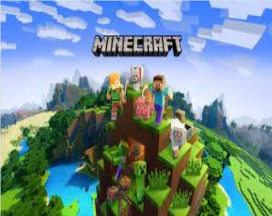
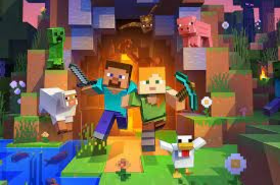
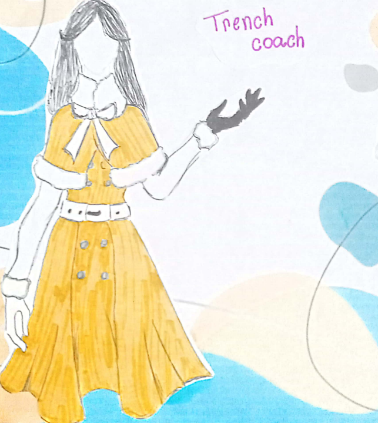

Pronto para descobrir coisas novas?
Então vamos lá
Poema
Moda europeia ______________________________________
O estilo europeu pode ser prevençal, lembrando Paris e um clima mais romântico, com flores, arabescos e outros itens. Mas o foco do artigo é em uma tendência que tem ganhado destaque, a decoração estilo europeu dos países nórdicos, que traz um tom bem diferente do prevençal para a decoração.
as principais características são: Peças ajustadas, simplificidade, cores neutras, poucas estampas, calça skinny, camisetas com gola V.

Síndrome de Down ______________________________________
Por mais que muitos pensem, a síndrome de down não é uma doença!
A síndrome de down é uma condição genética, que é definida através de um cromossomo 21 extra nas células do corpo.
O cientista John Langdon Down, foi quem estudou e se aprofundou para descobrir a síndrome de down.
A pessoa que possui essa síndrome, tem características físicas diferentes que quem possui a síndrome. Algumas delas: Pescoço curto, Mãos pequenas e dedos curtos, Flacidez muscular, Raiz nasal achatada e Pé plano.
As suas limitações não os impedem de que eles tenham uma vida digna. Todos nós devemos acabar com esse preconceito da incapacidade das pessoas com síndrome de down. Todos merecem respeito.
Minecraft ______________________________________
A primeira vez que Minecraft surgiu na internet foi em 2009, como um projeto online do programador sueco Markus ‘’Notch ‘’ Persson – e ficou conhecida como versão ‘’classic’’. Nessa versão, o usuário podia mexer nos blocos, mas ainda não havia os elementos de sobrevivência, que é o que torna a série tão popular.
Hoje, Minecraft existe, de maneira resumida em duas versões: Java e Bedrock. A Mojang Studios confirmou que a aguardada edição de arqueologia, finalmente será integrada ao Minecraft na atualização 1.20, que está prevista para este ano de 2023.
O novo sistema trará consigo uma série de funcionalidades e dinâmicas inéditas, que havia sido antecipada há alguns anos, mas que nunca viram a luz do dia. Dentre as novas ‘’skins’’ (personagens) teremos Sunny, Efe, Noor, Makena, Kai, Ari, Zuri que se juntarão aos personagens que já existem por padrão, Alex e Steve.
Para jogar é preciso explorar seus arredores e coletar materiais para criar armas, armaduras, comida, ferramentas e materiais de construção. Certas regiões, possuem materiais raros, como obsidiana e redstone, mas é preciso ter os equipamentos certos e, claro, é aconselhável ter um nível alto para sobreviver.
O Minecraft é usado na escola porque exercita a criatividade. As crianças gostam de testar, criar, inventar, montar e desmontar tudo aquilo que encontram pela frente. Também é interessante porque existe dois modos, o modo UM JOGADOR que se joga sozinho e o modo MULTIJOGADOR pode-se jogar em grupo com várias pessoas, até mesmo de outros países.


Trench Coach______________________________________
Quando se fala em inverno e sofisticação, o trench coat é um dos clássicos. É uma peça que está sempre em alta, além de ser elegante e versátil - Tanto para mulheres como para homens. No entanto, muita gente confunde e não sabe a diferença entre o trench coat e o sobretudo, que é um casaco alongado ( o comprimento varia entre a altura do quadril , no joelho e abaixo dele ). O clássico abotoamento frontal traspassado, a cintura marcada e a lapela diferenciam o trench coat do sobretudo. Esses detalhes Também dão o ar de sofisticação que ele tem.

TDAH______________________________________
É um transtorno neurobiológico de causas genéticas, caracterizado por sintomas como falta de atenção, inquietação e impulsividade. Aparece na infância e pode acompanhar a vida inteira do indivíduo.
Os sintomas são: Não presta atenção em detalhes ou comete erros pro descuido, dificuldade de manter atenção em tarefas, conversas e leituras, parece não escutar quando lhe digam uma palavra, não seguem instruções até o fim e não consegue terminar trabalhos, entre outros.
O dia internacional é dia 13 de julho.
Autismo______________________________________
O autismo é o resultado de alterações físicas e funcionais do cérebro e está relacionado ao desenvolvimento motor, da linguagem e comportamental.
Os principais sintomas do autismo são: demora ou incapacidade de desenvolver a fala, movimentos repetitivos, alterações nas funções motoras, preferência por determinadas comidas, dificuldade de concentração, dificuldade de manter o contato visual, problemas de autonomia, apego a determinados objetos, problemas com mudança de rotina, etc. No dia 02 de abril é comemorado o dia do autismo.